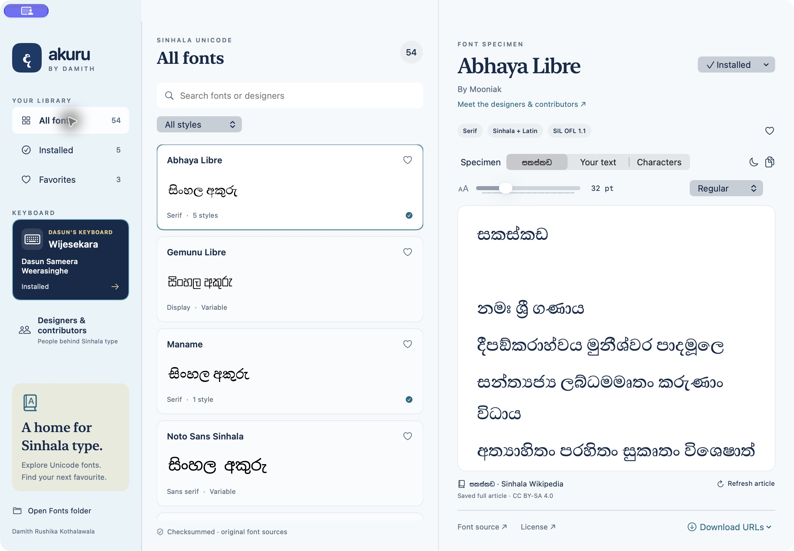
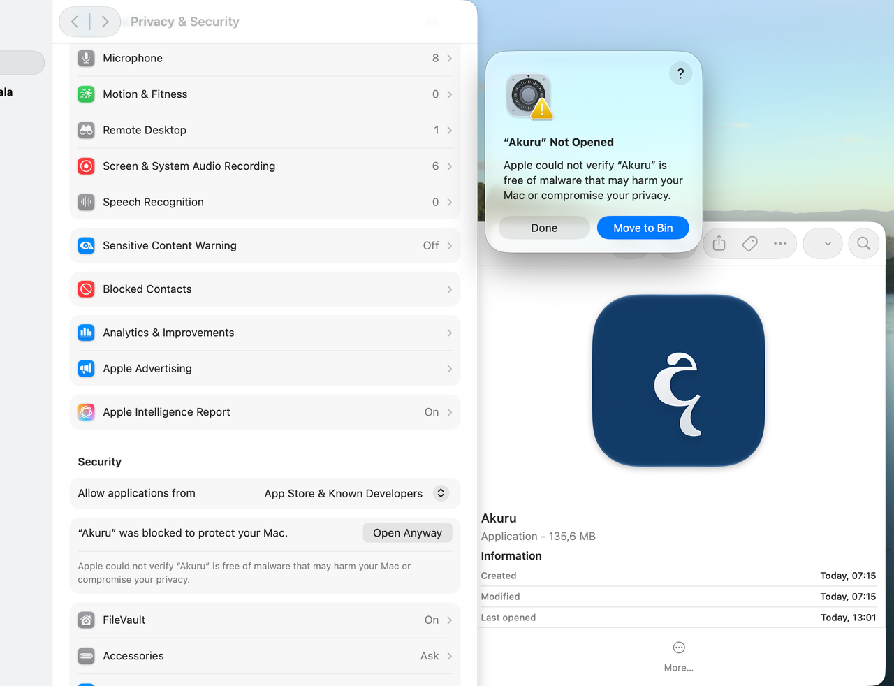

Browse 54 font families
Ready-made previews and the full සකස්කඩ specimen are available in the app before downloading each font.
Find a font for your next Sinhala project. Preview before you install, try your own text, and manage your fonts and Wijesekara keyboard in Akuru.
Apple Silicon + Intel · 54 distinct font families
Targets macOS 12.0 and newer · ZIP download, 122.6 MB
Download and install the desktop app to browse the complete library, explore designer credits and install the fonts you choose.
Ready-made previews and the full සකස්කඩ specimen are available in the app before downloading each font.
Preview custom text, keep favourites and manage font installations. Original source and usage notes stay with each font.
Explore source-backed designer and contributor profiles inside the app, alongside their credited work.

Created by Dasun Sameera Weerasinghe
Open the keyboard section in Akuru to install his layout, check for upstream updates and manage your copy. Original MIT licence and author credit are retained.
The current build is not Apple-notarized. If you decide to trust this download, Apple provides a per-app opening exception in Privacy & Security.

On macOS 12 Monterey: use System Preferences → Security & Privacy → General → Open Anyway. Apple’s Monterey guide ↗
Use this exception only if you trust the download. Read Apple’s official instructions ↗ · Release details and checksum ↗
The full font library and font-download controls are in Akuru. Install the app to browse previews, review each font’s terms and choose what to install. Fonts retain their authors’ original rights and sources.
Akuru checks for catalog updates when it opens with internet access. Compatible additions appear after a successful refresh, and you choose which fonts to install. The current release’s ready-made previews are bundled with the app; previews for newly added fonts require an app update, or you can download a font to render it.
Akuru focuses on Sinhala Unicode fonts. Legacy FM/DL and other non-Unicode fonts that fail the Sinhala Unicode mapping checks are excluded. Duplicate copies, weights and formats do not count as additional families. The current library contains 54 distinct families; original sources and usage notes are available inside the app.
No. The current release is ad-hoc signed and not notarized by Apple. I’m awaiting my Apple developer certificate. The guide above explains Apple’s per-app exception; it does not mean Apple has reviewed this build.
The archive includes Apple Silicon and Intel binaries with a macOS 12.0 minimum. Native UI was reviewed on macOS 27; builds and core checks passed on macOS 26. Native macOS 12 runtime testing remains unverified.
Usage terms differ. Some fonts restrict commercial use or have unresolved permissions. Review the notices and original terms in the app; inclusion in Akuru grants no additional font rights.
The designer and contributor directory, source references and original licence notices are included in the desktop app. Dasun’s keyboard is credited to Dasun Sameera Weerasinghe under its original MIT licence. The සකස්කඩ specimen is credited to Sinhala Wikipedia contributors, CC BY-SA 4.0.
The current 2.1.0 ZIP is 122,636,640 bytes. Its SHA-256 is:
b32909cf1a4d79f8831a475fb5bde3bf6d2f38c4f3103771692df62116b94f86
Akuru is a community project by Damith Rushika Kothalawala. If it helps your work, share the project with someone who writes or designs in Sinhala on a Mac.
Damith Rushika Kothalawala is a Principal Cloud Architect and Fellow of BCS. His experience spans more than 20 years in enterprise cloud, application modernization, platform engineering, telecommunications, and production operations. Based in Kuala Lumpur, he works across cloud architecture, Kubernetes, DevOps, and AI.
Connect on LinkedIn ↗